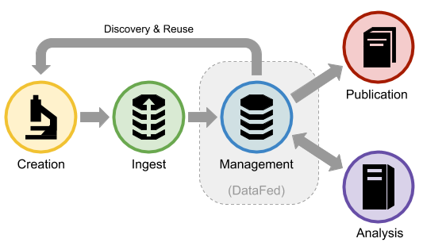

Introduction
DataFed is a federated and scalable scientific data management and collaboration system that addresses the critical need for holistic and FAIR-principled “big data” handling within, and across, scientific domains and facilities with the goal of enhancing the productivity and reproducibility of data-oriented scientific research. DataFed supports the early lifecycle stages of “working” scientific data and serves as a tool to ease the burden associated with capturing, organizing, and sharing potentially large volumes of heterogeneous scientific data. DataFed provides an environment in which scientific data can be precisely controlled and refined in preparation for eventual data publishing.
DataFed is an open source project hosted on GitHub at https://github.com/ORNL/DataFed. DataFed is under active development at Oak Ridge National Laboratory (ORNL) within the Oak Ridge Leadership Computing Facility (OLCF) and is currently deployed in an alpha-release state for early access users.
Background
The primary goal of DataFed is to improve scientific data quality by enabling precise early-lifecycle control over data artifacts, with the ability to uniformly share and access data across geographically distributed facilities. DataFed can be thought of as a “tier 2+” distributed data storage system - meaning it is intended for creating and working with data that is of medium- to long-term significance to the owner and/or collaborators. Unlike a tier 1 storage system (i.e. a local file system), DataFed compromises raw data access performance in favor of FAIR data principles.
While DataFed shares many features with tier 3 storage systems (i.e. data archival systems), DataFed allows data and metadata to be modified after it is ingested and specifically includes features for disseminating subsequent changes to downstream data consumers via automatic provenance-based alerts as well as opt-in data subscriptions. DataFed also provides powerful and easy to use collaboration features to encourage “in-band” data-related communication instead of ad hoc and error-prone methods, such as email.
DataFed utilizes Globus for efficient and secure data transfers, as well as for user authentication. Globus can be thought of as a “data network” where data transfers take place between Globus “endpoints” - which are Globus services that enable access to underlying file systems hosted by member organizations. DataFed adds a data management layer on top of Globus that permits data to be located and accessed without needing to know where the data is physically stored within the Globus network. Because DataFed relies heavily on Globus, it is recommended that DataFed users familiarize themselves with how Globus works.
Scientific Data Management
Traditional scientific data management systems (SDMS) are restricted to individual organizations or a small number of organizations connected via a “virtual organization” (VO) configuration. These systems typically support domain-specific and predetermined data workflows that cannot be readily applied to other domains or applications. On the other hand, data cataloging systems are typically single-site and provide access to static datasets. Also catalogs usually only support HTTP data transfers, thus limiting the size of datasets that can be served. Neither SDMSs nor cataloging systems can easily scale-out to accommodate large numbers of users across multiple organizations.
DataFed provides a combination of the features and benefits of both SDMSs and data cataloging services while also supporting big data. For example, DataFed provides storage and access to structured and unstructured heterogeneous raw data with access controls, metadata and provenance capture, and metadata indexing and search; however, DataFed diverges significantly from these systems in a number of ways to better serve the needs of open and collaborative scientific research.
Briefly, DataFed provides the following unique blend of capabilities and benefits:
Presents a uniform and concise logical view of widely distributed data.
Supports both general- and domain-specific use cases.
Manages “living data” throughout critical pre-publication data lifecycle stages.
Encourages FAIR-principled data practices via user- and community-defined schemas.
Enhances data awareness with automatic notification of “data events”.
Scales out and up to enable efficient big data research across organizations/facilities.
Provides high-quality data management foundation for use by other applications and services.
Data Lifecycle
DataFed is an enabling technology for the early lifecycle stages of scientific data - from data ingest to pre-publication. The figure below illustrates how DataFed supports the lifecycle stages:
DataFed provides interfaces that can be used to capture metadata, provenance, and raw data from the creation stage; whereas during analysis, new records may be created and linked to input records or dedicated context records. Pre-publication is supported by providing powerful data organization and data handling capabilities to help ensure that the right data is being published and that it contains proper metadata and provenance information. Note that data publishing systems may have additional metadata requirements that are not available from the data records themselves (i.e. contract numbers, sponsoring organizations, etc.)
Why DataFed?
DataFed directly benefits both individual researchers and teams of geographically dispersed collaborators who need to capture, manage, share, and access scientific data from within, or across, any of the experimental, observational, compute, or analytics resources within the Department of Energy’s national laboratory network.
Domain Agnosticism
DataFed is general purpose. DataFed is domain- and methodology-neutral in that it does not require users to utilize pre-defined data formats or processes - yet, despite this, DataFed provides powerful domain-specific metadata indexing and query capabilities augmented by user/community defined schemas.
Working Data Support
DataFed supports the pre-publication data lifecycle which is both critical and complex in collaborative scientific research - yet is under served by existing data management systems.
Scalability
DataFed is Scalable. Datafed was designed to easily scale-out across multiple/many organizations and facilities by relying on federated identity technology and a common access control mechanism; however, individual organizations are still able to manage their own data storage resources and policies. In contrast, most existing SDMS products either cannot span organizations at all, or rely on virtual organization (VO) technologies that are highly labor-intensive to scale beyond a few organizations.
Big Data Support
DataFed understands big data. DataFed was design from the start to support “big data” and the often complex environments in which such data is created and processed. Many existing SDMS products rely on tightly-coupled file systems or HTTP/S for moving data; however, DataFed utilizes Globus (GridFTP) for data transfer between facilities because it is the defacto standard for high performance movement of very large data sets (Petabyte scale) between government-funded user facilities (DoE), research universities, and commercial cloud computing services.
Foundation for Data Applications
DataFed focuses on providing high quality, uniform, and easy-to-use data management services and does not overreach by bundling complementary features such as instrument control, workflow processing, or data analytics that are better served by dedicated application-specific tools. However, DataFed does provide application programming interfaces (APIs) to allow other services or applications to be utilize DataFed’s data management capabilities.